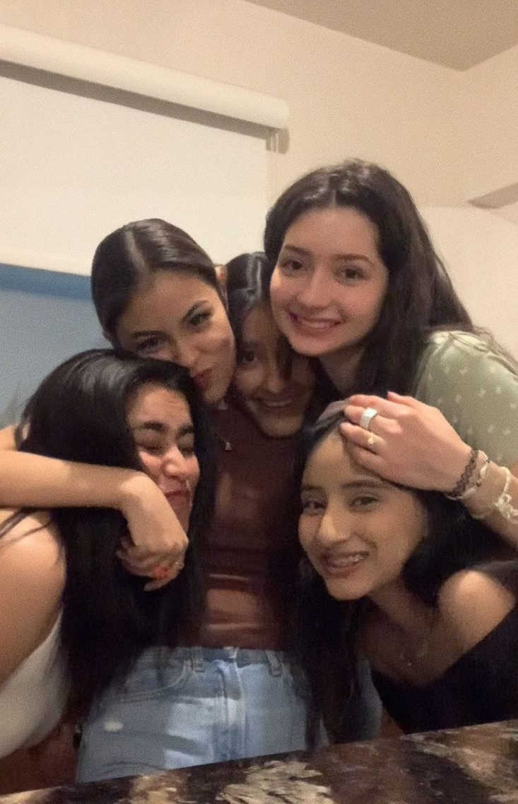

Amistades
Mis amigas de la prepa son como mi segunda familia. Somos un grupo de cinco y cada una tiene una personalidad totalmente diferente y creo que eso es lo que hace la escencia de nuestro grupo. Sus nombres son Addy, Mariana, Cecilia y Julieta. Nos encanta reunirnos los fines de semana para platicar sobre todooo lo que hicimos en la semana. Planeamos convertinos en viejitas y seguir siendo mejores amigas. Abajo les presento una foto de ellas.

Mis amigos de la facultad, mejor conocidos como nievebitos. En poco tiempo les he agarrado muchísimo cariño. Nos la pasamos riendonos todo el tiempo, asi que no hay forma de que te aburras con nosotros. Nos encanta tener frases especiales que se nos terminan pegando a todos. Somos siete en el grupo: Macarrón, Roblox, Valeria, Nhilze, Andrés y Roberto. Por cierto, nos encanta ponernos nicknames.
Les comparto su instagram para que los sigan.
Macklein(Macarrón)
Roble(Roblox)
Valeria
Nhilze
Andrés
Roberto